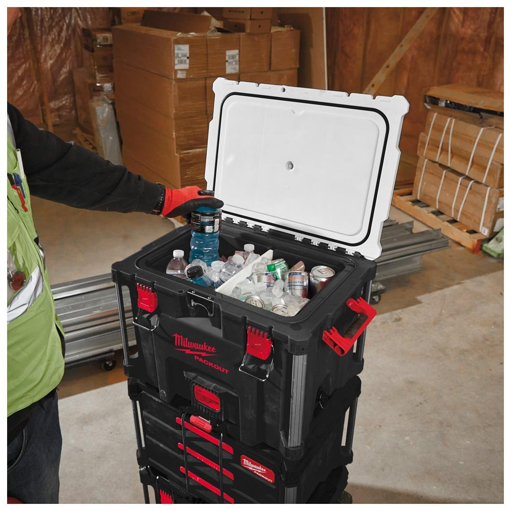
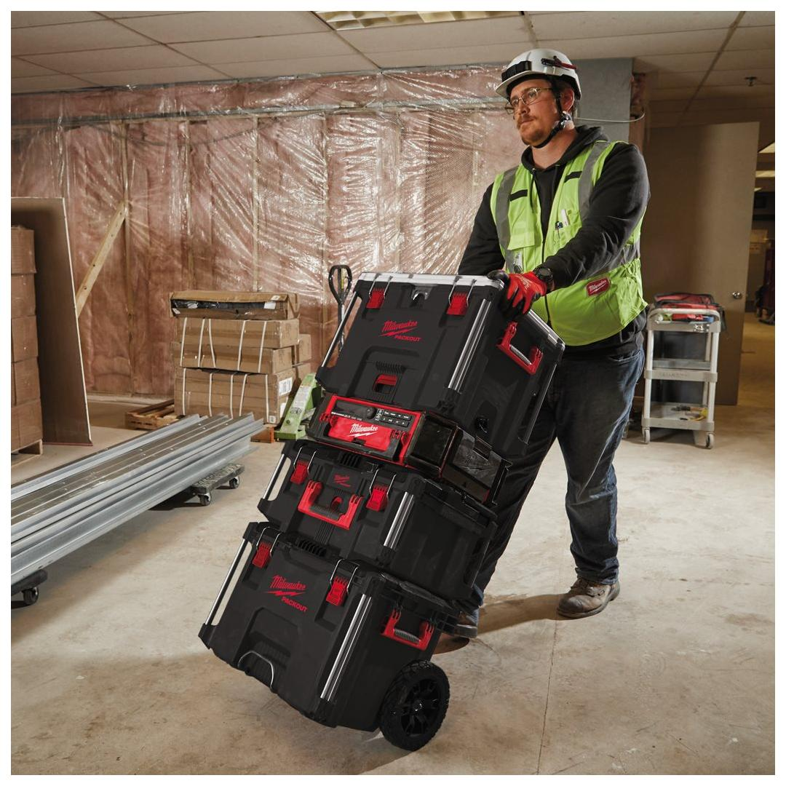
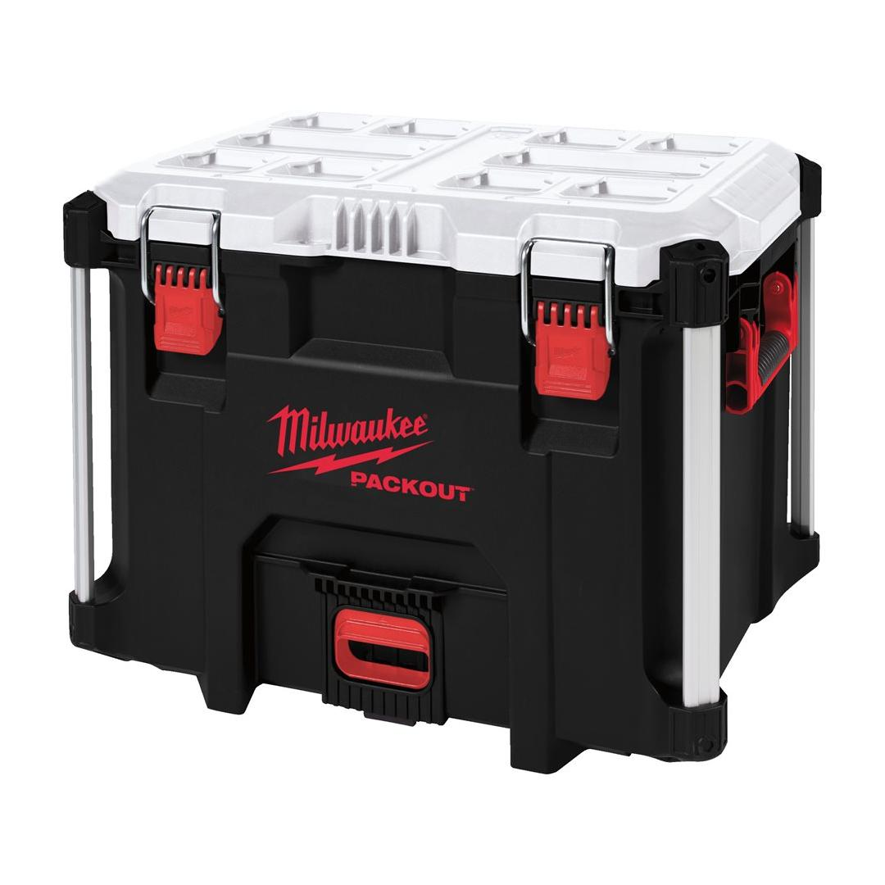
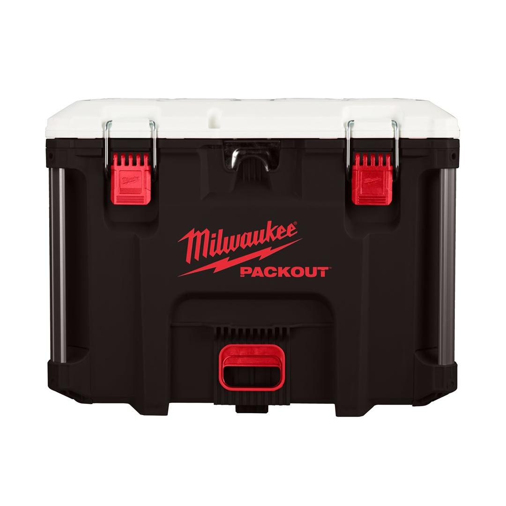
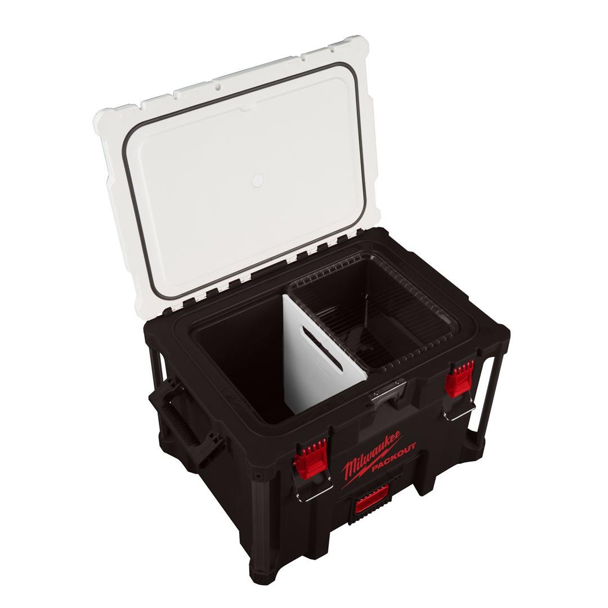

<h1>Milwaukee | PACKOUT - BOXES and TOOLBOXES INSULATED -XL Cooler</h1><p>4932478648</p><div style="display:flex;flex-wrap:wrap;gap:8px"></div><h4>Features</h4><ul><li>Double premium insulation keeps contents cold for up to 5 days.</li><li>IP 65 Food Grade Leak-Proof Liner prevents leakages and protects contents from debris and dust.</li><li>38 l capacity.</li><li>Removable tray for separate storage of personal items to keep them elevated above icy water.</li><li>Integrated bottle opener.</li><li>Constructed with impact resistant polymers for jobsite durability.</li><li>Part of the PACKOUT™modular storage system.</li></ul><h4>Information</h4><table><tr><td>Dimensions (mm)</td><td>432 x 584 x 406</td></tr><tr><td>Dimensions [Inner][H x W x D | mm]</td><td>318 x 406 x 267</td></tr><tr><td>MOQ</td><td>1</td></tr><tr><td>Pack quantity</td><td>1</td></tr></table>